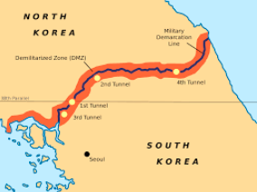
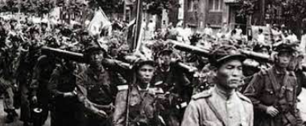
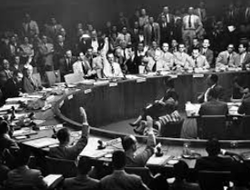
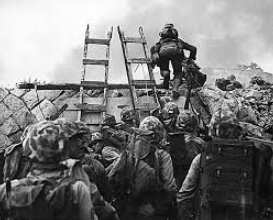
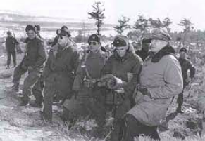
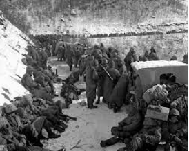
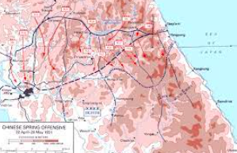
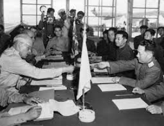
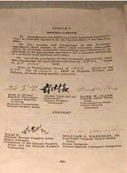
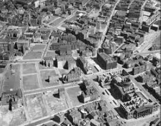

1945:The division of Korea into North and South.
This division occurred after the end of World War II in 1945 when the Korean Peninsula, which had been under Japanese colonial rule since 1910, was liberated. The Allies, including the Soviet Union and the United States, decided to divide Korea along the 38th parallel, with the northern part of the peninsula placed under Soviet influence and the southern part under American influence.

June 25, 1950: North Korean Invasion
North Korea in charge of Kim ll-sung joins the Soviet Union. North Korea invaded South Korea violating the 38th parallel.

June 27, 1950: United Nations Intervention
The United Nations Security Council passed a resolution calling for member nations to help South Korea in repelling the North Korean invasion. The United States, with other nations, helped South Korea by sending troops.

September 15, 1950: Inchon Landing
The United Nations Forces complete a successful landing on Inchon. That allows them to push North Korea and recapture Seoul. This was led by General Douglas MacArthur.

October 19, 1950: Chinese Intervention
As UN forces approached the Yalu River, the border between North Korea and China, the Chinese People's Volunteer Army intervened in support of North Korea, catching UN forces off guard.

November 27, 1950 - December 13, 1950: Battle of Chosin Reservoir
In extremely harsh winter conditions, UN forces, primarily US Marines, fought Chinese and North Korean troops around the Chosin Reservoir. Despite facing problems and difficulties, the UN completed the operation successfully.

March 14, 1951: Chinese Spring Offensive
Chinese forces tried to recapture Seul but the USA didn´t allow it.

.July 27, 1953: Armistice Agreement
An agreement was signed in Panmunjom that put an end to the Korean War. Both sides agreed to exchange prisoners and return them to their country.

1954: Korean Armistice Agreement
Even though the agreement was signed, the war did not end. The Korean Armistice Agreement was signed in 1954, formalizing the terms of the end of the war.

1950s-1960s: Post-war Reconstruction
Both North and South Korea focused on rebuilding their countries after the devastation of the war. United States help South Korea.
